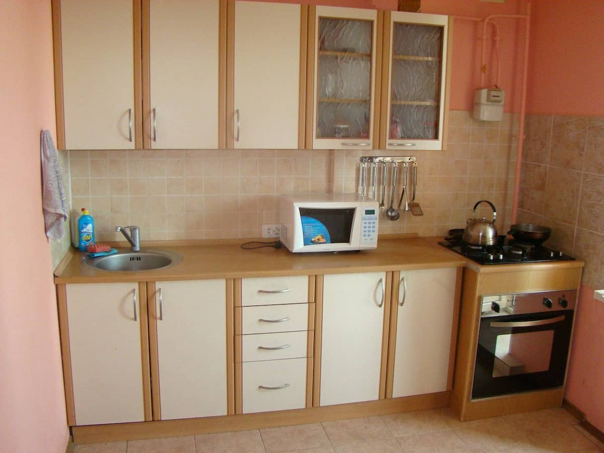

Апартаменты на море на 4 человека
Квартира для отдыха на море в г.Черноморск (Ильичевск) Чистая и уютная квартира,все есть для полноценного отдыха: холодильник, телевизор,тостер, газовая плита, стиральная машина, кондиционер, бойлер с горячей водой, кухня с обеденной зоной Рядом с домом супермаркеты, рынки, кафе, рестораны, удобная транспортная развязка В 600 м находиться море Во дворе можно оставит свой автомобиль.
Забронировать...

Live-room
Квартира для отдыха на море в г.Черноморск (Ильичевск) Квартира находиться на ул. 1 Мая 2-А. Чистая и уютная квартира,все есть для полноценного отдыха: холодильник, телевизор, газовая плита, стиральная машина, кондиционер, бойлер с горячей водой, кухня с обеденной зоной. Рядом с домом супермаркет 24h, рынки, кафе, рестораны, удобная транспортная развязка. В шаговой доступности находиться море. Во дворе можно оставит свой автомобиль.
Подробнее...

Квартира Live room
Квартира для приятного и комфортного отдыха в г.Черноморск (Ильичевск) Квартира расположена по адрессу пр. Мира 39 Квартира с кондиционером Для полноценного отдыха есть все Спальных мест на 4 человека Рядом с домом супермаркеты 24, рынки, кафе, рестораны, удобная транспортная развязка Во дворе можно оставить свой автомобиль.
Подробнее...

Квартира Live room
Отличную 2-х комнатная квартира с кондиционером, для приятного и комфортного отдыха в г.Черноморск (Ильичевск) Квартира находиться по ул. Данченко 2. К морю 3 минуты. Для полноценного отдыха есть все Спальных мест на 4-5 человек Рядом с домом супермаркеты 24, кафе, рестораны, удобная транспортная развязка Спуск к морю возле Чайки.